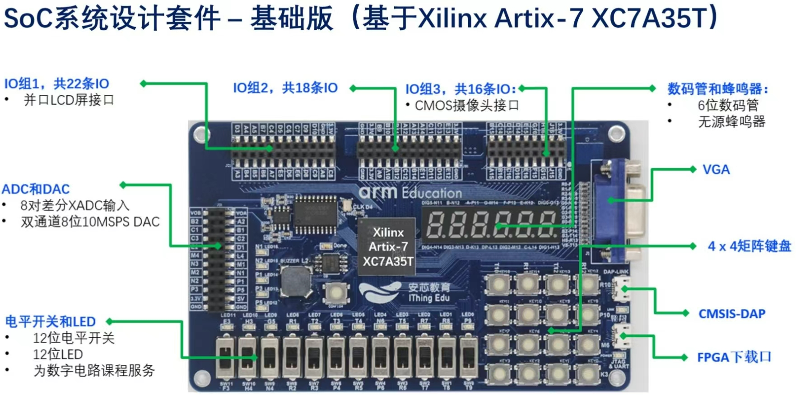
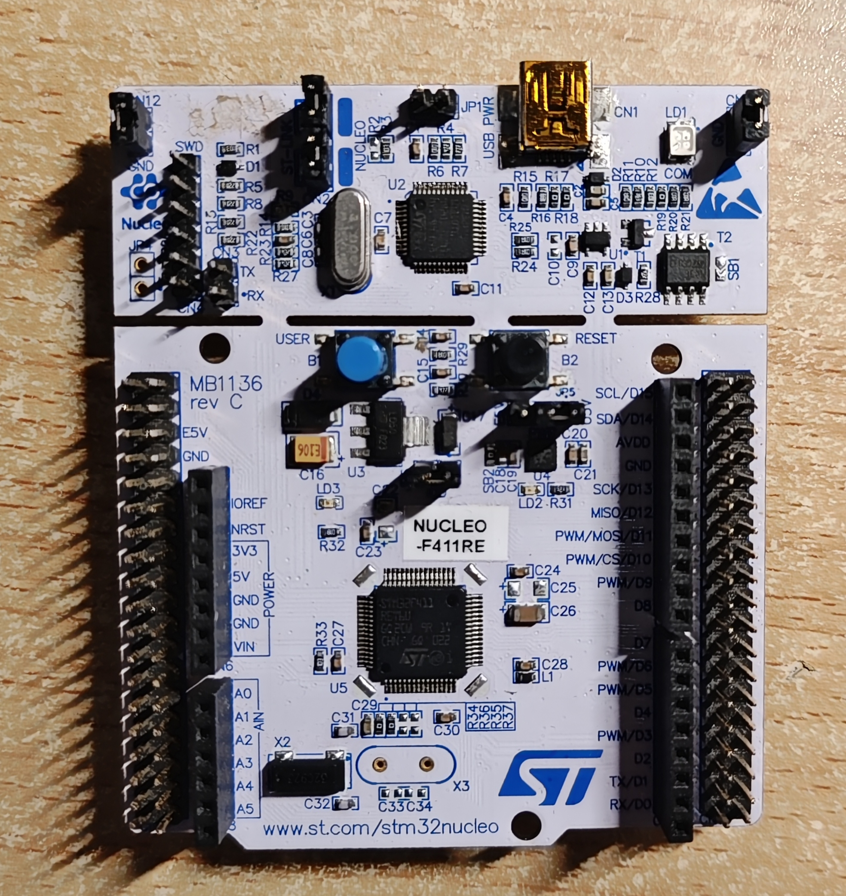
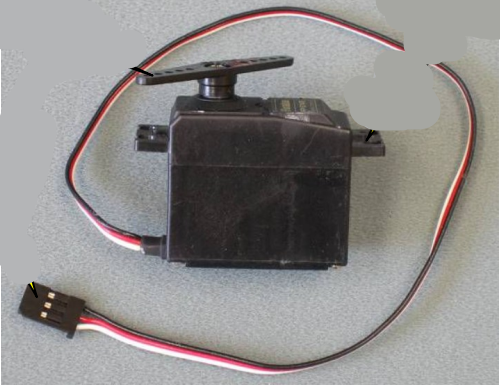

关于项目
智能垃圾分类存储机器人 · 第44组
项目目标
设计并制造一个能与用户交互的智能垃圾分类存储机器人，通过颜色传感器分辨垃圾种类，自动分类存储，具备物联网监控能力。

核心技术
- FPGA开发板 (Altera Cyclone IV) 核心控制
- TCS34725颜色传感器识别颜色
- HC-SR04超声波测距传感器
- L610 4G LTE Cat.1 无线通信模组
- Android上位机 (Java + SQLite)
- 伺服电机驱动分类存储机构
工作模式
操作模式：全自动运行，LCD+语音引导用户投放
维护模式：GUI界面测试电机、传感器，方便检修
物联网能力
L610模块实时上报状态至云端，手机端随时查看；存储不足时自动告警物业中心。
🔩 硬件组件

FPGA开发板
Altera Cyclone IV

微控制器
STM32F411RE

伺服电机
精确分类驱动

L610 通信模组
4G Cat.1

颜色传感器
TCS34725 RGB识别

距离传感器
HC-SR04 超声波测距

Android上位机
人机交互界面
🔗 系统架构
Android上位机
中英文切换 · 语音引导 · LCD显示 · 云端通信
微控制器单元
命令生成 · 数据中转 · 与FPGA及云端通信
FPGA开发板
电机控制 · 传感器读取 · 状态显示
L610无线模组
4G通信 · 数据上报 · 告警推送
颜色传感器
RGB识别 · 垃圾分类判定
测距传感器
用户距离检测 · 10cm安全防护